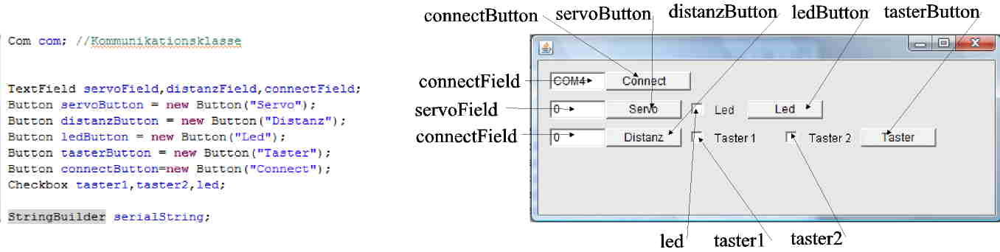
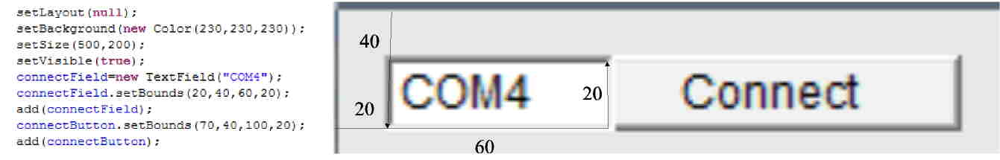

Die Oberfläche besteht aus folgenden Elementen:
Die Elemente kommen an folgende Position
Das schließen des Fensters
|
//Schließen des Fensters addWindowListener( new WindowAdapter() { public void windowClosing(WindowEvent e) { System.exit(0); } } ); |
Das logfile zum Aufzeichnen wird geöffnet:
| try { logfile = new BufferedWriter( new OutputStreamWriter( new FileOutputStream( "Logfile.txt" ) ) ); logfile.write("logfile.txt"); logfile.newLine(); } catch( IOException ex ) { System.out.println( ex ); try{ logfile.write(ex.toString()); logfile.newLine(); }catch(Exception exp){ } } |
Die serielle Schnittstelle COM4 wird mit einer Bautrate 9600 geöffnet
|
//Die serielle Schnittstelle wird parametriert. Der COMPort 4 wird gewält. Die Bautrate ist 9600. try{ SerialPort serialPort = new SerialPort(); Parameters parameters = new Parameters(); parameters.setPort("COM4"); parameters.setBaudRate("9600"); com = new Com(parameters); } catch (Exception e) { e.printStackTrace(); } |
Der Servo bekommt einen Sollwert (S) zwischen 0...120 Grad. Der String "S90" gibt die Stellung des Servos vor.
|
if ((event.target == servoButton)){ String servoString=new String(); servoString="S"+servoField.getText(); sendData(servoString); return true; } |
Wenn ein anderer Port gewählt wird kann dieser Eingestellt werden.
|
else if ((event.target == connectButton)){ try{ Parameters parameters = new Parameters(); parameters.setPort(connectField.getText()); logfile.write("Port: "+connectField.getText()); logfile.newLine(); System.out.println(connectField.getText()); parameters.setBaudRate("9600"); logfile.write("Baurate: 9600"); logfile.newLine(); com = new Com(parameters); } catch (Exception e) { e.printStackTrace(); try{ logfile.write(e.toString()); logfile.newLine(); }catch(Exception exp){ } } return true } |
Es wird "A"(Analogwert) an den Prozessor gesendet. Der Distanzsensor wird ausgelesen und sendet einen String zurück.
|
else if ((event.target == distanzButton)){ String serielEingang=new String(); String input; sendData("A"); serielEingang=receiveData('A'); input=serielEingang.substring(1); distanzField.setText(input); return true; } |
Die Led wird an oder aus geschalten, wenn der ledButton gedrückt wurde
|
else if ((event.target == ledButton)){//Bei Drücken des ledButton if(led.getState()==true)sendData("D5");//Schalte Led an else sendData("D6");//Schalte Led aus return true; } |
Die beiden Taster werden abgefragt, wenn der tasterButton gedrückt wird.
|
else if ((event.target == tasterButton)){ sendData("D2");//Taster 2 soll ausgelesen werden String tasterString1=receiveData('D');//Zustand des Tasters 2 if(tasterString1.charAt(1)=='0') taster1.setState(true);//Checkbox wird markiert else taster1.setState(false);//Keine Markierung des Checkbox sendData("D3");//Taster 3 soll ausgelesen werden //String tasterString2=receiveData('D');//Zustand des Tasters 3 //if(tasterString2.charAt(1)=='0') taster2.setState(true);//Checkbox wird markiert else taster2.setState(false);//Keine Markierung des Checkbox return true; } |
Senden eines Strings an den Mikrocontroller
|
public void sendData(String data){ try{ for (int i = 0; i < data.toCharArray().length; i++) {//Sende den Sting com.sendSingleData(data.toCharArray()[i]);//Buchstabe für Buchstabe wird gesendet } com.sendSingleData(13);//Der String endet mit Zeilenumbruch logfile.write("Sende:"+data);//Im logfile wird gespeichert logfile.newLine(); } catch(Exception e){//Wenn nicht gesendet werden kann e.printStackTrace();//Bei Consolenanwendungen wird auf die Konsole gescrieben try{ logfile.write(e.toString());//Fehler wird ins Logfile geschrieben logfile.newLine(); }catch(Exception exp){ } } } |
Empfangen eines Strings vom Mikrocontroller
|
public String receiveData(char kommand){ String buchstabe=new String(); try{ serialString.delete(0, serialString.length());//Der String wird gelöscht while(!buchstabe.equalsIgnoreCase("\n")){//Solange kein Zeilenumbruch kommt buchstabe=com.receiveSingleString();//Neuer Buchstabe wird empfangen if(buchstabe.length()>0) {//Wenn der String Buchstabe nicht leer ist serialString.append(buchstabe);//Buchstabe wird angehängt } } logfile.write("Empfangen:"+serialString.toString());//Empfangener String } catch(Exception e){ e.printStackTrace();//Fehler wird auf Console geschrieben try{ logfile.write(e.toString());//In die logfile Datei wird geschrieben logfile.newLine(); }catch(Exception exp){ } } return serialString.toString(); } |
Die Appliation wird initiert
|
public static void main(String[] args) { HMI hmi=new HMI(); hmi.init(); } |